456 — Bệnh võng mạc trẻ sinh non (ROP): zone–stage–plus & AP-ROP / Retinopathy of prematurity
Tags: pattern:rop vung:vong-mac score:ICROP protocol:sang-loc-ROP
Mức chắc chắn (certainty): tổng hợp y văn (literature synthesis) — nhóm tự biên từ y văn mở (Community Eye Health 2017 CC BY-NC; Sci Rep 2020 CC BY; Eye and Vision 2020 CC BY; Clin Exp Pediatr 2022 CC BY-NC; Turk Pediatri Ars 2018 CC BY-NC-SA), chưa gắn ca nguyên văn đơn lẻ.
1. Tổng quan — bệnh của mạch máu CHƯA kịp mọc: hai thì sinh bệnh học
- Bối cảnh (pathology): mạch máu võng mạc mọc dần từ đĩa thị ra ngoại vi, hoàn tất ở khoảng tuần 40 sau kinh cuối. Trẻ càng non, diện võng mạc ngoại vi vô mạch càng lớn — đây là "mảnh đất" của ROP. Vì vậy ROP không có ở trẻ đủ tháng (trừ bệnh giả ROP bẩm sinh, mục 2).
- Hai thì (two-phase) — TẠI SAO ra hình ảnh:
- Thì 1 — "độc tính oxy" (từ sinh → ~32 tuần PMA): bình thường nồng độ oxy trong tử cung thấp; ra đời (kể cả khí trời, nặng hơn khi thở oxy) là tăng oxy tương đối → giảm yếu tố tăng sinh mạch nội mô (VEGF) qua con đường HIF → mạch máu võng mạc NGỪNG mọc → giữ lại vùng vô mạch ngoại vi.
- Thì 2 — "thiếu oxy → VEGF" (từ ~32 tuần PMA): võng mạc vô mạch thiếu oxy → tăng VEGF → tân mạch bất thường mọc ngay ở ranh giới mạch/vô mạch (gờ), xuyên vào dịch kính → xơ + co kéo → bong võng mạc (tractional retinal detachment).
- Hệ quả lâm sàng: ROP nặng lên theo mức non + oxy liệu pháp, và zone càng gần đĩa thị (zone I) càng dễ tiến triển ác tính (vùng vô mạch rộng + mật độ yếu tố tăng sinh cao) — ROP zone III hiếm khi nặng.
- Ngưỡng định lượng nằm lòng (theo ICROP / AAP–AAO–AAPOS):
- Sàng lọc: mọi trẻ tuổi thai ≤ 30 tuần VÀ/HOẶC cân nặng lúc sinh ≤ 1500 g; mở rộng cho trẻ 30–32 tuần hoặc 1500–2000 g có bệnh cảnh nặng (hỗ trợ hô hấp/tim mạch, cần theo dõi theo bác sĩ sơ sinh).
- Tần suất bệnh: tỷ lệ ROP ở trẻ non nhẹ cân ~10–40% tùy quốc gia; tỷ lệ cần điều trị chỉ ~1–2% (Thụy Sĩ 1,2%). Theo giai đoạn (Thụy Điển, < 31 tuần): stage 1 9,5%, stage 2 11,6%, stage 3 10,4%, stage 4 0,2%, stage 5 0,2%.
- Ngưỡng điều trị Type 1 (ETROP): zone I bất kỳ giai đoạn có plus; zone I stage 3; zone II stage 2 hoặc 3 có plus. Điều trị trong vòng 48–72 giờ kể từ khi phát hiện.
2. Mẫu hình + chẩn đoán phân biệt theo vùng (gamut theo zone)
ICROP (International Classification of Retinopathy of Prematurity) mô tả 4 trục độc lập: vùng (zone), giai đoạn (stage), mức lan (clock hours), plus/pre-plus; riêng AP-ROP là chân dung đặc biệt.
- Theo ZONE (vùng) — vùng quyết định tiên lượng, đo bằng ĐƠN VỊ ĐĨA–HOÀNG ĐIỂM (disc–fovea, 1 DF = khoảng cách đĩa–hoàng điểm):
- Zone I: vòng tròn bán kính 2 DF quanh đĩa thị (nội tiếp hoàng điểm). Nặng nhất, dễ điếc thị lực.
- Zone II: từ rìa zone I tới ora serrata phía mũi (và đến kinh tuyến 3/9 giờ phía thái dương).
- Zone III: liềm thái dương còn lại — hiếm khi nặng, tiên lượng tốt nhất.
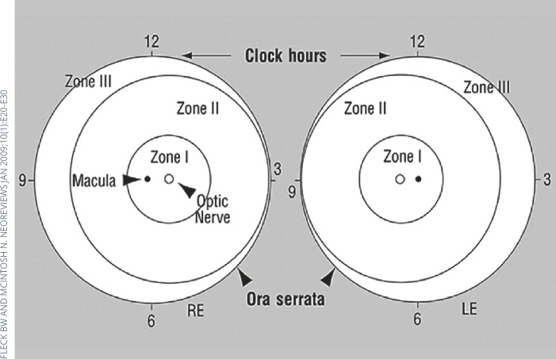
Zone I quanh đĩa thị, zone II tới ora phía mũi, zone III là liềm thái dương; 12 mốc giờ đồng hồ ghi mức lan theo góc (clock hours). Nguồn: Molinari A et al., Community Eye Health 2017, PMC5806220 Fig. 6, CC BY-NC 4.0.- Theo STAGE (giai đoạn) — mức độ tăng sinh:
- 1: đường ranh giới (demarcation line) trắng giữa võng mạc mạch hóa và vô mạch.
- 2: ranh giới nhô lên thành gờ (ridge) có thể có "bọt ngô" (popcorn) — chồi tân mạch nhỏ.
- 3: gờ + tăng sinh xơ-mạch ngoài võng mạc (extraretinal fibrovascular proliferation) mọc vào dịch kính — bắt đầu có nguy cơ co kéo.
- 4A/4B: bong võng mạc một phần, phân biệt 4A chưa/4B đã bắt hoàng điểm.
- 5: bong võng mạc toàn bộ — hình "trắng đồng tử" (leukocoria) ở trẻ (bài 450).
- Theo PLUS / PRE-PLUS:
- Plus disease: giãn tĩnh mạch + vằn xoắn tiểu động mạch ở cực sau, ≥ 2 góc phần tư — dấu hiệu shunt mạch, bệnh tiến triển.
- Pre-plus: bất thường mạch nhiều hơn bình thường nhưng chưa đủ tiêu chuẩn plus — "tiền thân" cần theo dõi sát.
- AP-ROP (aggressive posterior ROP, "bệnh rầm rộ"): gần như luôn ở zone I / zone II sau; tân mạch phẳng, khó thấy, KHÔNG có gờ rõ, plus mạnh chiếm 4 góc; có thể nhảy thẳng sang stage 4–5 mà không qua tuần tự 1→3 → điều trị cấp cứu, không chờ phân giai đoạn.
- Gamut bệnh "giả ROP" (mimics — trẻ ĐỦ tháng, KHÔNG có tiền sử sinh non): FEVR (familial exudative vitreoretinopathy), Coats, PHPV/PFV, incontinentia pigmenti, Norrie — cùng chân dung tân mạch/bong võng mạc nhưng không do sinh non (bài 450).
3. Bảng so sánh phân biệt (ma trận đối chiếu)
| Thực thể (entity) | Hình ảnh điển hình | Chốt vào (rule-in) | Chốt loại (rule-out) | Gợi ý xác nhận |
|---|---|---|---|---|
| ROP nhẹ (stage 1–2, không plus) | Đường phân cách / gờ ở ranh giới mạch-vô mạch, không vằn mạch cực sau | Sinh non + gờ nhẹ ở zone II–III + không plus | Mạch cực sau vằn xoắn rõ → đã plus/AP-ROP | Soi đáy mắt 1–2 tuần (zone I: 1 tuần) |
| ROP stage 3 (nguy cơ) | Gờ + xơ-mạch mọc vào dịch kính, có thể kèm plus | Tăng sinh ngoài võng mạc + zone I hoặc plus | Gờ phẳng không mạch → stage 2 | Type 1 (zone I/II + plus) → điều trị 48–72 giờ |
| Plus / pre-plus | Vằn xoắn tiểu động mạch + giãn tĩnh mạch cực sau | ≥ 2 góc phần tư vằn + giãn rõ = plus | Vằn ít, chưa đủ tiêu chuẩn → pre-plus | Ảnh đáy mắt góc rộng; đối chiếu ảnh chuẩn |
| AP-ROP | Tân mạch phẳng vùng cực sau (zone I), plus mạnh, KHÔNG gờ | Zone I/II sau + tân mạch phẳng + plus 4 góc | Có gờ rõ, tiến triển tuần tự → ROP thường | Điều trị cấp cứu, không chờ phân giai đoạn |
| Bong võng mạc ROP (stage 4–5) | Bong một phần (4A/4B) hoặc toàn bộ (5), hình phễu/leukocoria | Tân mạch co kéo + bong VM | Bong do rách nguyên phát → khác (bài 445) | Siêu âm B-scan khi mờ đục môi trường |
| Bệnh giả ROP (FEVR, Coats, PHPV) | Tân mạch/bong VM ở trẻ đủ tháng, có thể hai bên/gia đình | Đủ tháng + tiền sử gia đình + không sinh non | Sinh non + bệnh cảnh oxy → ROP | FA, gene (NDP/FZD4/LRP5), bài 450 |
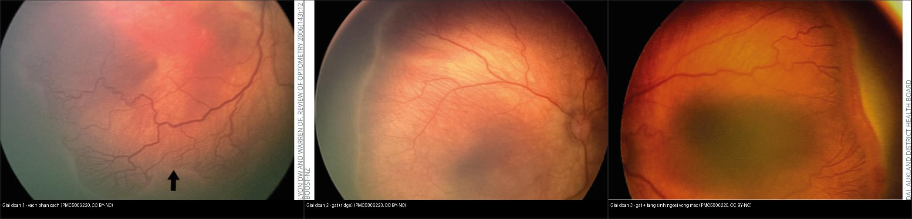
Ba giai đoạn đầu của ROP cùng chuỗi đáy mắt màu (fundus). Nguồn: Molinari A et al., Community Eye Health 2017, PMC5806220 Fig. 1–3, CC BY-NC 4.0. Ảnh ghép letterbox, giữ nguyên bản (không crop/kéo giãn).Quiz composite: che 3 nhãn — giai đoạn nào có tăng sinh mạch mọc khỏi mặt võng mạc?
Bấm để hiện đáp án
- Panel phải = stage 3: đã có mạch máu mọc trong gờ (tăng sinh xơ-mạch ngoài võng mạc) — đây là giai đoạn bắt đầu co kéo và là mốc nguy cơ.
- Panel trái = stage 1: chỉ đường phân cách (demarcation line) — chưa có gờ.
- Panel giữa = stage 2: gờ (ridge) nhô lên nhưng mạch chưa mọc khỏi mặt võng mạc.
- Chốt phân biệt: stage 3 là mốc tăng sinh — kèm zone I hoặc plus → Type 1, phải điều trị.
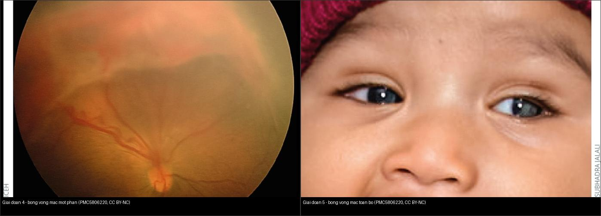
Khi tân mạch co kéo đủ mạnh: võng mạc bị kéo bong — một phần (stage 4) rồi toàn bộ (stage 5). Nguồn: Molinari A et al., Community Eye Health 2017, PMC5806220 Fig. 4–5, CC BY-NC 4.0. Ảnh ghép letterbox, giữ nguyên bản.4. Protocol: sàng lọc theo lịch + ngưỡng điều trị ETROP
- Sàng lọc (screening):
- Đối tượng: trẻ ≤ 30 tuần hoặc ≤ 1500 g; cân nhắc 30–32 tuần / 1500–2000 g có bệnh cảnh nặng.
- Khám đầu tiên: tuần 31–33 sau kinh (postmenstrual age) hoặc 4 tuần tuổi thực, lấy mốc MUỘN HƠN. Bảng theo tuổi thai (thứ tự tăng dần lịch khám): 22–27 tuần → khám ở 31–32 tuần PMA (tuổi thực 4–9 tuần); 28–31 tuần → 32–35 tuần PMA; ≥ 32 tuần → 36 tuần PMA / 4 tuần tuổi thực.
- Khoảng tái khám: zone I: mỗi 1 tuần; zone II: ≥ 2 tuần; zone III: 2–3 tuần.
- Kết thúc sàng lọc: mạch máu đã mọc hết tới zone III + không có ROP zone I/II); đặc biệt thận trọng ở trẻ đã dùng anti-VEGF (mạch có thể không mọc hết, tái hoạt muộn).
- Ngưỡng điều trị (ETROP — "Type 1"): zone I bất kỳ giai đoạn có plus; zone I stage 3 (có/không plus); zone II stage 2 hoặc 3 có plus; AP-ROP. → điều trị trong 48–72 giờ.
- Type 2 (theo dõi): zone I stage 1–2 không plus; zone II stage 3 không plus.
- Ngưỡng cũ "threshold" (ít dùng, hiểu lịch sử): stage 3 tổ chức liền 5 giờ đồng hồ hoặc 8 giờ cộng dồn + plus ở zone I/II = nguy cơ bong 50% nếu không điều trị.
- Điều trị:
- Laser quang đông vùng võng mạc vô mạch (chuẩn vàng; đốt vô mạch, không đốt vào mạch ROP). Tác dụng phụ: cận thị, hẹp thị trường, hiếm thiếu máu đoạn trước (đặc biệt AP-ROP).
- Anti-VEGF (bevacizumab/ranibizumab) — ưu thế cho zone I/AP-ROP, dễ làm tại giường; BẤT LỢI LỚN: tái hoạt muộn → phải theo dõi đến ≥ 65 tuần PMA, cảnh giác giai đoạn nguy cơ cao 45–55 tuần PMA (BEAT-ROP: tái phát 7,2% sau 5 năm; ranibizumab được chấp thuận EU 2019 cho zone I stage 1+/2+/3 ± , zone II stage 3+, AP-ROP).
- Phẫu thuật: bong võng mạc stage 4–5 — đai/thắt vòng củng mạc (scleral buckle) hoặc cắt dịch kính (vitrectomy, ưu tiên cắt dịch kính bảo tồn thể thủy tinh ở stage 4 zone II).
- Chẩn đoán hình ảnh: ROP là bệnh chẩn đoán bằng soi đáy mắt/ảnh đáy mắt góc rộng (widefield, RetCam/smartphone) — KHÔNG dùng CT/MRI thường quy. Siêu âm B-scan khi môi trường mờ đục (xuất huyết dịch kính) để đánh giá bong võng mạc.
flowchart TD
A[Sinh non: <= 30 tuan hoac <= 1500 g] --> B[Sang loc: 31-33 tuan PMA hoac 4 tuan tuoi thuc - lay moc muon hon]
B --> C[Kham day mat gian dong tu: zone - stage - clock hours - plus]
C --> D{Type 1 ?}
D -->|Zone I + plus / Zone I stage 3 / Zone II stage 2-3 + plus / AP-ROP| E[Dieu tri trong 48-72 gio: laser hoac anti-VEGF]
D -->|Type 2| F[Theo doi: zone I hang tuan, zone II >= 2 tuan]
E --> G[Sau anti-VEGF: theo doi den PMA >= 65 tuan, cang 45-55 tuan]
E --> H[Bong VM stage 4-5: dai cung mac / cat dich kinh]
F --> I[Vascular hoa het zone III + khong ROP I-II: ket thuc]
5. Biến thể bình thường và cạm bẫy
- AP-ROP "phẳng" dễ bị bỏ sót vì không có gờ rõ như ROP thường — nếu chỉ tìm gờ sẽ bỏ qua; chốt là plus mạnh + tân mạch phẳng vùng cực sau. Khi nghi AP-ROP điều trị ngay, không mất thời gian phân giai đoạn.
- Plus vs pre-plus: dao động giữa người đọc (inter-observer) — cùng một đáy mắt, chẩn đoán plus có thể khác nhau; vì vậy cần ảnh đáy mắt góc rộng lưu lại + ảnh chuẩn và chụp lại theo chuỗi để so tiến triển, không "đoán mắt".
- Cạm bẫy "gờ giả": có thể nhầm gờ ROP với vùng nếp/mạch bình thường ở zone III, hoặc với bệnh giả ROP ở trẻ đủ tháng (FEVR/Coats) — luôn xác nhận tiền sử sinh non.
- Bỏ theo dõi quá sớm sau anti-VEGF: mạch ngoại vi có thể chưa mọc hết, bệnh tái hoạt muộn (đến > 65 tuần PMA) → bong võng mạc muộn. Trẻ anti-VEGF phải theo dõi dài hơn laser.
- Trẻ sinh non ≤ 30 tuần KHÔNG được sàng lọc = cạm bẫy nặng nhất; bệnh có thể im lặng cho tới khi đã bong võng mạc. Không chờ "trắng đồng tử" (đó đã là stage 5).
- Stage 5 (leukocoria): phân biệt với retinoblastoma (vôi hóa thô, < 5 tuổi) và Coats/PHPV — đây là các đáp án của bệnh giả ROP (bài 450), cần siêu âm + MRI chứ không phải soi ROP.
- Cận thị do điều trị: cả laser lẫn anti-VEGF đều gây cận thị (laser nặng hơn) — trẻ có tiền sử ROP bất kể mức độ cần khám khúc xạ/thị lực định kỳ đến tuổi đi học.
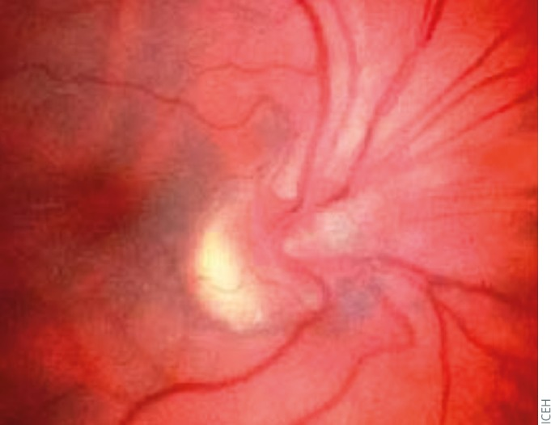
Di chứng sau ROP: đĩa thị/bó mạch bị kéo lệch, dải xơ võng mạc — nguồn gốc cận thị, lác, nhược thị cần theo dõi dài hạn. Nguồn: Molinari A et al., Community Eye Health 2017, PMC5806220 Fig. 9, CC BY-NC 4.0.6. Tự lượng giá — Blind Quiz
Ca 1 — Trẻ sinh non 27 tuần, khám sàng lọc. Nhìn đáy mắt, mô tả trước:
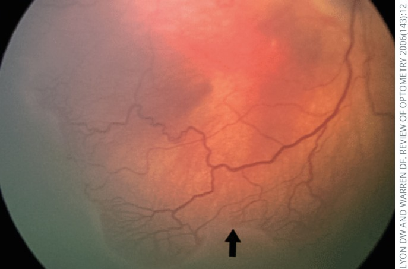
- Gợi ý lâm sàng: trẻ non tháng, khám theo lịch sàng lọc ROP.
- Hỏi: dấu chính là gì? Đây là giai đoạn nào? Có cần điều trị không?
Bấm để hiện đáp án (findings + chẩn đoán)
- Dấu hiệu (findings): đường phân cách (demarcation line) trắng giữa võng mạc có mạch và vùng vô mạch ngoại vi (mũi tên).
- Chẩn đoán (diagnosis): ROP giai đoạn 1 — chưa có tăng sinh, thường tự thoái triển; không cần điều trị, tái khám theo lịch (zone I: 1 tuần; zone II: ≥ 2 tuần).
- Nguồn ảnh: Molinari A et al., Community Eye Health 2017, PMC5806220 Fig. 1, CC BY-NC 4.0.
Ca 2 — Trẻ non tháng, đáy mắt có gờ và mạch mọc vào gờ ở vùng cực sau. Sàng lọc hay điều trị?
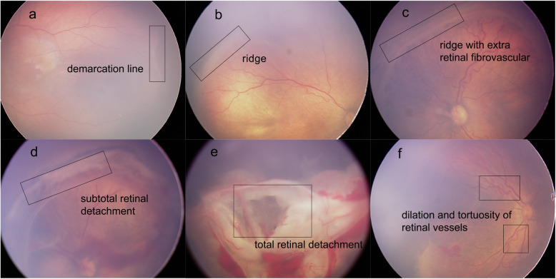
- Hỏi: panel nào là stage 3? Panel nào là plus? Vì sao stage 3 ở zone I/II kèm plus là cấp cứu?
Bấm để hiện đáp án (findings + chẩn đoán)
- Panel: (a) đường phân cách = stage 1; (b) gờ = stage 2; (c) gờ + tăng sinh xơ-mạch ngoài võng mạc = stage 3; (d) bong võng mạc một phần = stage 4; (e) bong toàn bộ = stage 5; (f) giãn + vằn xoắn mạch = plus.
- Chẩn đoán (diagnosis): stage 3 + plus (Type 1) → điều trị trong 48–72 giờ (laser hoặc anti-VEGF) để tránh bong võng mạc co kéo.
- Nguồn ảnh: Tong Y et al., Eye and Vision 2020, PMC7395360 Fig. 2, CC BY 4.0.
Ca 3 — Trẻ rất non, mạch cực sau vằn mạnh, KHÔNG thấy gờ rõ:
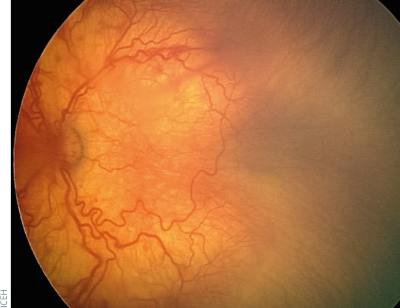
- Hỏi: đây có phải "ROP thường"? Vì sao nguy hiểm? Xử trí?
Bấm để hiện đáp án (findings + chẩn đoán)
- Dấu hiệu (findings): tân mạch phẳng vùng cực sau (zone I) + giãn/vằn xoắn mạch mạnh (plus); không có gờ kinh điển.
- Chẩn đoán (diagnosis): AP-ROP (aggressive posterior ROP) — có thể nhảy thẳng sang stage 4–5 mà không qua tuần tự; điều trị cấp cứu ngay (không chờ phân giai đoạn).
- Nguồn ảnh: Molinari A et al., Community Eye Health 2017, PMC5806220 Fig. 8, CC BY-NC 4.0.
Ca 4 — Đọc sơ đồ vùng, xác định ranh giới zone I:
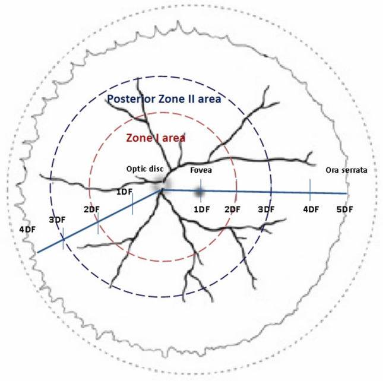
- Hỏi: bán kính zone I bằng bao nhiêu? Vì sao ROP zone I nặng nhất? Vùng nào tiên lượng tốt nhất?
Bấm để hiện đáp án (findings + chẩn đoán)
- Dấu hiệu (findings): Zone I = vòng bán kính 2 DF (DF = khoảng cách đĩa thị–hoàng điểm); posterior zone II ở ngoài tới ~3 DF.
- Chẩn đoán/ý nghĩa: zone càng gần cực sau càng dễ tiến triển nặng (vùng vô mạch rộng, VEGF cao); zone III (liềm thái dương) tiên lượng tốt nhất.
- Nguồn ảnh: Jang JH et al., Sci Rep 2020, PMC7582165 Fig. 3, CC BY 4.0.
Ca 5 — Trẻ sinh non nặng, hai mắt có vùng trắng đục sau đồng tử, không thấy đáy mắt rõ:
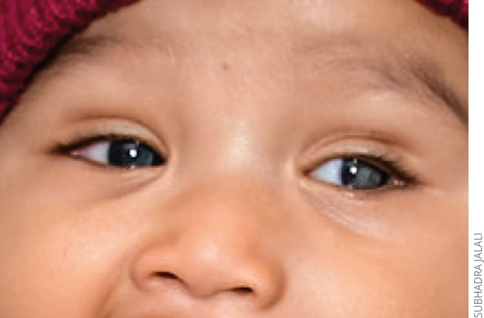
- Hỏi: giai đoạn nào? Vì sao không thấy đáy mắt lại là tin xấu? Bước tiếp theo?
Bấm để hiện đáp án (findings + chẩn đoán)
- Dấu hiệu (findings): bong võng mạc toàn bộ = stage 5, lệch trục/leukocoria; đáy mắt mờ do bong + môi trường đục.
- Chẩn đoán (diagnosis): ROP stage 5 — nếu ánh đồng tử trắng ở trẻ chưa rõ sinh non, phải loại trừ retinoblastoma/Coats/PHPV (bài 450).
- Xử trí: siêu âm B-scan đánh giá bong; cân nhắc cắt dịch kính; tiên lượng kém dù mổ.
- Nguồn ảnh: Molinari A et al., Community Eye Health 2017, PMC5806220 Fig. 5, CC BY-NC 4.0.
Ca 6 — Đối chiếu plus vs AP-ROP: nhìn hai đáy mắt, đọc thứ tự nặng:
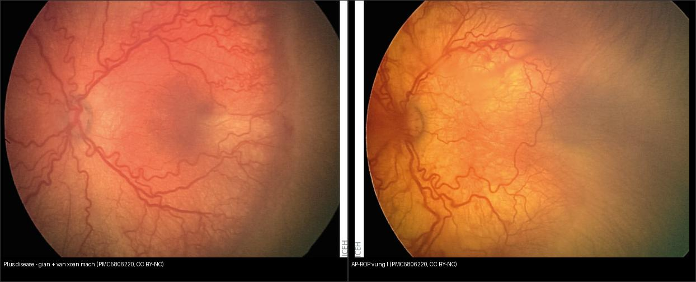
- Hỏi: panel nào là AP-ROP? Dấu nào phân biệt plus disease đơn thuần với AP-ROP? Khác nhau về xử trí?
Bấm để hiện đáp án (findings + chẩn đoán)
- Trái = plus disease: giãn tĩnh mạch + vằn xoắn tiểu động mạch ở cực sau (dấu shunt), thường đi kèm ROP có gờ.
- Phải = AP-ROP: tân mạch PHẲNG vùng zone I + plus mạnh, không gờ rõ.
- Chốt phân biệt: AP-ROP = plus + tân mạch phẳng không gờ → điều trị cấp cứu; plus đơn thuần chỉ nâng mức nguy cơ, xử trí theo type/zone/stage.
- Nguồn ảnh: Molinari A et al., Community Eye Health 2017, PMC5806220 Fig. 7–8, CC BY-NC 4.0. Ảnh ghép letterbox.
Ca 7 — Trẻ sinh non 25 tuần, mạch vằn cực sau tăng dần qua các lần chụp; đánh giá lịch theo dõi:
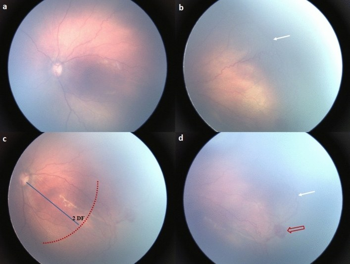
- Hỏi: dấu nào gợi pre-plus → plus? Vì sao cần chuỗi ảnh thay vì một lần khám? Ngưỡng theo dõi zone I?
Bấm để hiện đáp án (findings + chẩn đoán)
- Dấu hiệu (findings): chuỗi ảnh cho thấy mạch ngoại vi mọc chậm/chuyển sang vằn rõ dần (pre-plus → plus), cùng vùng tân mạch ở ranh giới.
- Bài học: so sánh chuỗi ảnh giúp phát hiện tiến triển mà một lần khám dễ bỏ sót; zone I theo dõi mỗi 1 tuần.
- Nguồn ảnh: Jang JH et al., Sci Rep 2020, PMC7582165 Fig. 4, CC BY 4.0.
Bài liên quan chéo
- 400 – Tổng quan Mắt & thị giác (bảng DDx mắt)
- 450 – Mắt nhi: ROP, Coats, PHPV (leukocoria + bệnh giả ROP)
- 443 – Võng mạc đái tháo đường (tân mạch võng mạc ở người lớn — cùng VEGF)
- 445 – Bong võng mạc (co kéo vs rách nguyên phát)
- 411 – Siêu âm nhãn cầu (B-scan khi mờ môi trường)
- 412 – U trong nhãn cầu (retinoblastoma — phân biệt stage 5)
- 610 – Suy hô hấp sơ sinh (oxy liệu pháp — yếu tố nguy cơ)
Ảnh
- Tên file:
456_rop-*_Fundus_PMC<haimột>-Fig*-CCBY*.jpg; nguồn + giấy phép từng ảnh trongimages/CREDITS.md. - Ảnh gốc PMC5806220 (CC BY-NC 4.0) và các ảnh ghép giữ nguyên bản, không crop/kéo giãn (letterbox nền đen).
- AuntMinnie (Case of the Day): chỉ dẫn link, không tải.
Không dùng để chẩn đoán độc lập khi chưa có người hướng dẫn.